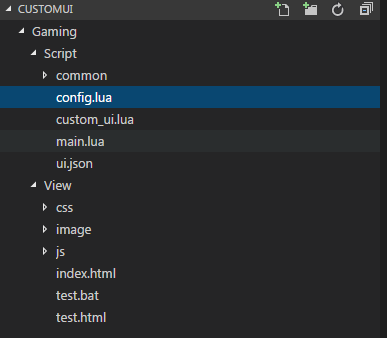

基本目录结构
自定义界面脚本的目录结构如下图所示：

一般情况下实现一个自定义界面只需修改如下几个文件：
-
ui.json用 json 格式定义的自定义界面描述文件 -
config.lua自定义界面相关配置，包括加载界面对应的 json 文件、技能绑定到控件、属性绑定到控件等 -
custom_ui.lua在这里响应游戏和界面派发给 lua 的事件，实现对应的界面变化逻辑
界面所用到的资源存放在 CustomUI/Gaming/View/image 里，可根据需求添加。在 lua 代码里将图片资源传给界面接口时，需要使用图片的相对路径，如 image/HeroMainPanel/panel_2.png。
main.lua 是 lua 逻辑的入口，一般情况下不需要修改。common 目录是封装的一些各个地图通用的功能，如技能绑定、buff 绑定、属性绑定等，一般情况下也不需要修改。
启用自定义页面
启用自定义页面需要修改 table/mapInfo.ini, 加入配置项：
bEnableCustomUI = 1
bRenderWithCoherentGT = 1
然后重新编译 table.apk